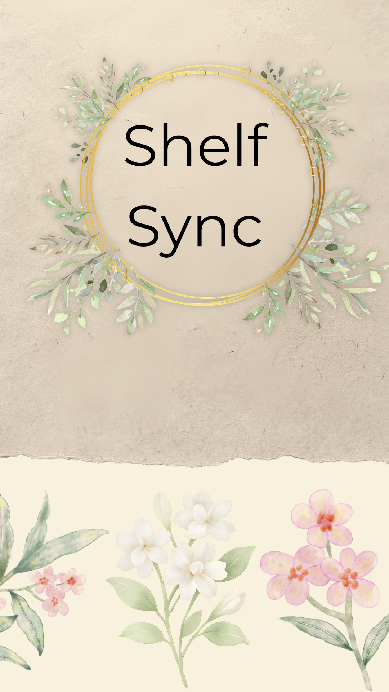

Nothing on the shelf yet
Import your eBay active listings report and every item gets a real age, counted from its true start date.

-1){this.src='splash.jpg';}else{this.remove();}">Shelf Sync
Listing freshness & SEO tracker
Listing freshness & SEO tracker
Import your eBay active listings report and every item gets a real age, counted from its true start date.